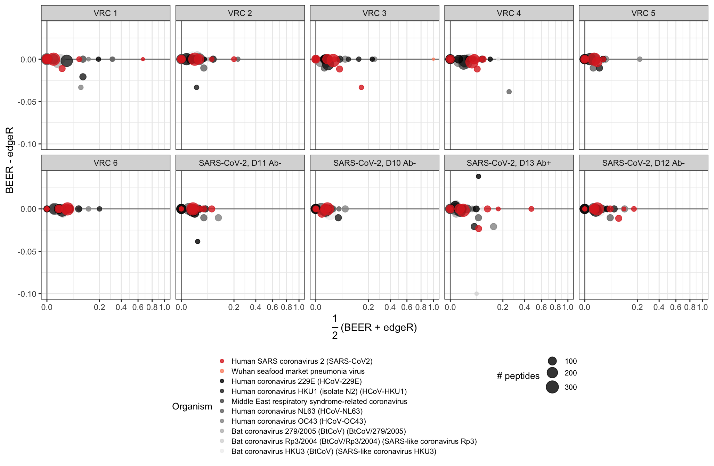

Last updated: 2021-09-15
Checks: 7 0
Knit directory: beer_manuscript/
This reproducible R Markdown analysis was created with workflowr (version 1.6.2). The Checks tab describes the reproducibility checks that were applied when the results were created. The Past versions tab lists the development history.
Great! Since the R Markdown file has been committed to the Git repository, you know the exact version of the code that produced these results.
Great job! The global environment was empty. Objects defined in the global environment can affect the analysis in your R Markdown file in unknown ways. For reproduciblity it’s best to always run the code in an empty environment.
The command set.seed(20210907) was run prior to running the code in the R Markdown file. Setting a seed ensures that any results that rely on randomness, e.g. subsampling or permutations, are reproducible.
Great job! Recording the operating system, R version, and package versions is critical for reproducibility.
Nice! There were no cached chunks for this analysis, so you can be confident that you successfully produced the results during this run.
Great job! Using relative paths to the files within your workflowr project makes it easier to run your code on other machines.
Great! You are using Git for version control. Tracking code development and connecting the code version to the results is critical for reproducibility.
The results in this page were generated with repository version 917bca7. See the Past versions tab to see a history of the changes made to the R Markdown and HTML files.
Note that you need to be careful to ensure that all relevant files for the analysis have been committed to Git prior to generating the results (you can use wflow_publish or wflow_git_commit). workflowr only checks the R Markdown file, but you know if there are other scripts or data files that it depends on. Below is the status of the Git repository when the results were generated:
Ignored files:
Ignored: .DS_Store
Ignored: .Rhistory
Ignored: .Rproj.user/
Ignored: analysis/.DS_Store
Ignored: analysis/partials/.DS_Store
Ignored: data_processed/.DS_Store
Ignored: data_processed/simulation_2beads_mle/.DS_Store
Ignored: data_processed/simulation_2beads_mom/.DS_Store
Ignored: data_processed/simulation_2beads_truth/.DS_Store
Ignored: data_processed/simulation_4beads_edgeR/.DS_Store
Ignored: data_processed/simulation_curves.rda
Ignored: figures/.DS_Store
Unstaged changes:
Modified: R/figure_coronascan.R
Modified: README.Rmd
Note that any generated files, e.g. HTML, png, CSS, etc., are not included in this status report because it is ok for generated content to have uncommitted changes.
These are the previous versions of the repository in which changes were made to the R Markdown (analysis/coronascan.Rmd) and HTML (docs/coronascan.html) files. If you’ve configured a remote Git repository (see ?wflow_git_remote), click on the hyperlinks in the table below to view the files as they were in that past version.
| File | Version | Author | Date | Message |
|---|---|---|---|---|
| Rmd | 917bca7 | Athena Chen | 2021-09-15 | wflow_publish(list.files(“analysis”, pattern = “Rmd”, full.names = TRUE)) |
| html | 54af830 | Athena Chen | 2021-09-15 | Build site. |
| html | e30784b | Athena Chen | 2021-09-14 | Build site. |
| html | 4984369 | Athena Chen | 2021-09-14 | Build site. |
| html | 34893c7 | Athena Chen | 2021-09-14 | Build site. |
| Rmd | 667d1af | Athena Chen | 2021-09-14 | Added simulation output |
| html | 667d1af | Athena Chen | 2021-09-14 | Added simulation output |
The CoronaScan PhIP-seq antigen library consists of 3466 unique peptides tiling proteins belonging to various coronaviruses, including SARS-CoV2, viruses associated with the common cold, and bat coronaviruses. Each peptide is present in duplicate, resulting in a total of 6932 peptides in the library.
This data set consists of eight beads-only samples and ten serum samples all run on the same plate. Of the ten serum samples, six samples are from individuals who participated in a vaccine research study prior to the discovery of SARS-CoV2. The remaining four samples are serum samples from various time points from one individual who was infected with SARS-CoV2. These samples were also tested for SARS-CoV2 antibodies.
#' Code to load required packages to reproduce the results and figures in
#' the manuscript.
required_packages <- c('plyr', 'tidyverse', 'here', 'ggpubr', 'gridExtra',
'latex2exp', 'kableExtra', 'RColorBrewer', 'BiocManager')
for (pkg in required_packages) {
if (!(pkg %in% rownames(installed.packages()))) {
install.packages(pkg)
}
library(pkg, character.only = TRUE)
}
bioc_packages <- c("beer")
for(pkg in bioc_packages){
if(!(pkg %in% rownames(installed.packages()))) {
BiocManager::install(pkg)
}
library(pkg, character.only = TRUE)
}
rm(list = c("required_packages", "bioc_packages", "pkg"))
#' Define global variables for plotting
hot_cold_cols <- c("navy", "blue", "deepskyblue", "cyan", "lightcyan",
"yellow", "orange", "red")#' helper_functions.R
#'
#' functions used to help process and analyze output from BEER simulations
#' integrate_vector()
#'
#' Function to perform trapezoidal approximation given two vectors.
#'
#' @param x numeric vector of x values
#' @param y numeric vector with the same length as x
#'
#' @return numeric value of the trapezoidal approximation
integrate_vector <- function(x, y){
if (length(y) != length(x)) {
stop("The length of the vectors must be equal.")
}
n_points <- length(y)
sorted_ind <- sort(x, index.return = TRUE)$ix
sorted_x <- x[sorted_ind]
sorted_y <- y[sorted_ind]
# trapezoidal rule
sum(0.5 * (sorted_y[-1] + sorted_y[-n_points]) *
(sorted_x[-1] - sorted_x[-n_points]))
}
#' get_roc()
#'
#' Function to calculate the ppv, sens, and spec for various
#' cutoffs between 0 and 1.
#'
#' @param data data frame with columns `prop_enriched` for the threshold and
#' `Z` for the true enrichment status, and optional column `extra_info`
#' @param min_cutoff minimum cutoff, default to 0
#' @param max_cutoff maximum cutoff, default ot 1 - 1e-6
#' @param extra_info boolean indicating whether extra information should be used
#' in the classification at each cutoff. If `TRUE`, then the column `extra_info`
#' must be present in the data frame.
#'
#' @return data fram with columns `cutoff`, `ppv`, `sens`, and `spec`.
get_roc <- function(data, min_cutoff = 0, max_cutoff = 1 - 1e-6,
extra_info = FALSE){
cutoffs <- seq(min_cutoff, max_cutoff, length.out = 1000)
# Calculate ppv, sens, spec for each cutoff
ppv <- sapply(cutoffs, function(x) {
if(extra_info){
predict <- (data$prop_enriched >= x & data$extra_info)
} else {
predict <- (data$prop_enriched >= x)
}
sum((data$Z == 1) & predict)/sum(predict)
})
spec <- sapply(cutoffs, function(x){
if(extra_info){
predict <- (data$prop_enriched >= x & data$extra_info)
} else {
predict <- (data$prop_enriched >= x)
}
sum((data$Z == 0) & !predict)/sum(data$Z == 0)
})
sens <- sapply(cutoffs, function(x){
if(extra_info){
predict <- (data$prop_enriched >= x & data$extra_info)
} else {
predict <- (data$prop_enriched >= x)
}
sum((data$Z == 1) & predict)/sum(data$Z == 1)
})
# Get AUC for ROC
npoints <- length(sens)
area_roc <- integrate_vector(1-spec, sens)
return(cutoffs = data.frame(cutoff = cutoffs,
ppv = ppv,
sens = sens,
spec = spec,
area_roc = area_roc))
}
#' get_legend()
#'
#' Function given [here](https://stackoverflow.com/questions/12539348/ggplot-separate-legend-and-plot)
#' to extract the legend for plotting purposes.
#'
#' @param plot ggplot
#' @return ggplot legend
get_legend <- function(myggplot){
tmp <- ggplot_gtable(ggplot_build(myggplot))
leg <- which(sapply(tmp$grobs, function(x) x$name) == "guide-box")
legend <- tmp$grobs[[leg]]
return(legend)
}
#' mysqrt_trans()
#'
#' Function given [here](https://stackoverflow.com/questions/47944992/ggplot2-removes-zero-when-using-scale-x-sqrt)
#' to add zero to the plot after sqrt transforming the x-axis
#'
#' @param plot ggplot
#' @return ggplot legend
mysqrt_trans <- function() {
scales::trans_new("mysqrt",
transform = base::sqrt,
inverse = function(x) ifelse(x<0, 0, x^2),
domain = c(0, Inf))
}
#' penriched_fit()
#'
#' Function that returns a data frame with the point estimate, and 95\%
#' confidence intervals.
#'
#' @param model logistic regression model
#' @param covariates data frame of covariates
#' @return data frame with columns for the covariate, point estimate, lower CI
#' and upper CI.
penriched_fit <- function(model, covariates){
# Predict based on the model
prediction <- predict(model, covariates, type = "link", se.fit = TRUE)
pred_lower <- prediction$fit - 1.96*prediction$se.fit
pred_upper <- prediction$fit + 1.96*prediction$se.fit
# Transform logit to probabilities
ppred <- 1/(1 + exp(-prediction$fit))
plower <- 1/(1 + exp(-pred_lower))
pupper <- 1/(1 + exp(-pred_upper))
# Return covariates with prediction + 95 CI added
bind_cols(covariates,
data.frame(predict_p = ppred,
lower_ci = plower,
upper_ci = pupper))
}cs <- readRDS(here("data_raw", "coronascan.rds"))
# Look at metadata
sampleInfo(cs)DataFrame with 18 rows and 4 columns
group n days_since_infection ab_test
<character> <numeric> <numeric> <character>
BEADS 1 beads 265705 NA NA
BEADS 2 beads 283164 NA NA
BEADS 3 beads 257012 NA NA
BEADS 4 beads 270956 NA NA
BEADS 5 beads 289627 NA NA
... ... ... ... ...
CS 6 vrc 267894 NA NA
CS 7 SARS-CoV2 251115 11 neg
CS 8 SARS-CoV2 246656 10 neg
CS 9 SARS-CoV2 128815 13 pos
CS 10 SARS-CoV2 255767 12 negTo estimate the false-positive rate, we run each beads-only sample against the remaining seven beads-only samples.
## Run edgeR with beadsRR
cs_out <- edgeR(cs, assay.names = c("edgeR_logfc", "edgeR_prob"),
parallel = "multisession", beadsRR = TRUE)
## Run beer with beadsRR
beer_assays <- c(phi = NULL, phi_Z = "beer_logfc", Z = "beer_prob",
c = "sampleInfo", pi = "sampleInfo")
cs_out <- brew(cs_out, assay.names = beer_assays, beadsRR = TRUE,
parallel = "multisession")For plotting convenience, we convert the PhIPData object to a tidy dataframe.
# Convert to tidy format and add hits for each approach
# Order samples by BEADS, VRC, then days since infection
cs_tidy <- as(cs_out, "DataFrame") %>%
as_tibble() %>%
group_by(sample) %>%
mutate(is_se = ifelse(sample != "beads" & is.na(beer_prob), TRUE, FALSE),
sample = factor(sample, levels = colnames(cs)[c(1:14, 16, 15, 18, 17)]),
beer_hits = ifelse(beer_prob > 0.5 | is_se, 1, 0),
edgeR_bh = p.adjust(10^(-edgeR_prob), method = "BH"),
edgeR_hits = ifelse(edgeR_bh < 0.05, 1, 0)) %>%
ungroup()MA plots for the proportion of enriched peptides by protein for six pre-pandemic samples and four samples from one individual infected with SARS-CoV2. Samples from this individual were collected at various days since symptom onset (labels D10-D13) and were additionally tested for SARSCoV2 antibodies using (Ben) Ab test. Antibody test results (positive or negative) are indicated by Ab+ or Ab-, respectively. Points represent individual proteins; point colors indicate virus types; and point diameters indicate the number of peptides tiling the respective proteins. In the CoronaScan library, peptides are present in duplicate, so the number of peptides is double the number of unique peptides.
# Color palette
cs_species <- unique(cs_tidy$organism)
grey_palette <- palette(gray(seq(0.1, 0.8, len = (length(cs_species) - 1))))
# Make `grey_palette` is of the correct length. Not sure why this has to be run twice
grey_palette <- if(length(grey_palette) < (length(cs_species) - 1)){
palette(gray(seq(0.1, 0.8, length.out = (length(cs_species) - 1))))
} else grey_palette
num_sarscov2 <- grep("SARS-CoV2", cs_species)
cs_order <- c(cs_species[num_sarscov2], cs_species[-num_sarscov2])
# Facet labels
facet_labels <- case_when(
sampleInfo(cs)$group == "beads" ~ colnames(cs),
sampleInfo(cs)$group == "vrc" ~
paste0("VRC ", gsub("CS ", "", colnames(cs))),
TRUE ~ paste0("SARS-CoV2, D", sampleInfo(cs)$days_since_infection,
" Ab", ifelse(sampleInfo(cs)$ab_test == "pos", "+", "-")))
names(facet_labels) <- colnames(cs)
cs_tidy %>%
filter(group != "beads") %>%
select(sample, peptide, organism, protein_name, beer_hits, edgeR_hits) %>%
group_by(sample, organism, protein_name) %>%
summarize(prot_prop_Bayes = mean(beer_hits),
prot_prop_edgeR = mean(edgeR_hits),
num_peptides = n(), .groups = "drop") %>%
mutate(organism = factor(organism, levels = cs_order)) %>%
arrange(desc(organism), desc(num_peptides)) %>%
ggplot(aes(x = 0.5*(prot_prop_Bayes + prot_prop_edgeR),
y = prot_prop_Bayes - prot_prop_edgeR,
color = organism,
size = num_peptides/2)) +
facet_wrap(sample ~., ncol = 5,
labeller = labeller(sample = facet_labels)) +
geom_hline(aes(yintercept = 0), size = 0.5, color = "grey50") +
geom_vline(aes(xintercept = 0), size = 0.5, color = "grey50") +
geom_point(alpha = 0.8) +
labs(x = TeX("$\\frac{1}{2}$ (BEER + edgeR)"),
y = "BEER - edgeR",
color = "Organism",
size = "# peptides") +
scale_x_continuous(trans = "mysqrt",
limits = c(0, 1),
breaks = seq(0, 1, by = 0.2)) +
scale_color_manual(values = c(grey_palette[1:(num_sarscov2 - 1)],
"firebrick2",
grey_palette[-(1:(num_sarscov2 - 1))]),
breaks = cs_species) +
theme_bw() +
theme(aspect.ratio = 1,
legend.title = element_text(size = 10),
legend.text = element_text(size = 8),
legend.key.size = unit(0.75, "lines"),
legend.position = "bottom") +
guides(color = guide_legend(ncol = 1, order = 1),
size = guide_legend(ncol = 1, order = 2))
Concordance of paired peptides in CS sample 9. For each unique peptide sequence, the proportion of reads pulled for peptide 1 with the same sequence is plotted against the proportion of reads pulled for peptide 2 of the same sequence (top left). For BEER with edgeR estimates peptides are ranked by decreasing posterior probability of enrichment, with ties broken by the estimated fold-change. For edgeR, peptides are ranked by increasing p-values, with ties again broken by estimated fold-changes. The concordance between the rankings for the top \(k\) ranks (x-axis) between all peptide 1’s and all peptide 2’s for each method is shown in the top right panel.
# Define sample to look at
cs_sample <- "CS 1"
# Plot for proportion of reads
prop_reads <- cs_tidy %>%
filter(sample == cs_sample) %>%
mutate(prop_reads = counts/n) %>%
select(pair_id, pair_num, prop_reads) %>%
pivot_wider(names_from = "pair_num",
values_from = "prop_reads") %>%
dplyr::rename(pair_1 = `1`, pair_2 = `2`) %>%
ggplot(aes(x = log10(pair_1),
y = log10(pair_2))) +
geom_point(size = 1) +
geom_abline(aes(intercept = 0, slope = 1)) +
labs(title = "Proportion of reads pulled",
x = "peptide pair #1, log10(proportion)",
y = "peptide pair #2, log10(proportion)") +
scale_x_continuous(breaks = seq(-5, -2, by = 1),
minor_breaks = seq(-5, -2, by = 0.5),
labels = TeX(paste0("$10^{", -5:-2, "}$"))) +
scale_y_continuous(breaks = seq(-5, -2, by = 1),
minor_breaks = seq(-5, -2, by = 0.5),
labels = TeX(paste0("$10^{", -5:-2, "}$"))) +
theme_bw() +
theme(aspect.ratio = 1,
title = element_text(size = 10))
# CAT curve for BEER posterior probabilities
# For a fair comparison, set super-enriched peptides in the replicate sample
# to have a rank of 1 as all of these peptides are identified as enriched
# by BEER and edgeR.
se_peps <- cs_tidy %>%
filter(sample == cs_sample & is_se) %>%
group_by(pair_id) %>%
filter(row_number() == 1) %>%
ungroup() %>%
mutate(rank = 1:n())
# Ties are broken by the posterior marginal estimates of phi
beer_ranks <- cs_tidy %>%
filter(sample == cs_sample) %>%
group_by(pair_num) %>%
arrange(desc(beer_prob), desc(beer_logfc), pair_id, .by_group = TRUE) %>%
mutate(rank_se = nrow(se_peps) + cumsum(!pair_id %in% se_peps$pair_id)) %>%
left_join(se_peps %>% select(pair_id, rank), by = c("pair_id")) %>%
mutate(rank = ifelse(pair_id %in% se_peps$pair_id, rank, rank_se)) %>%
select(pair_id, pair_num, rank) %>%
pivot_wider(names_from = "pair_num",
values_from = "pair_id") %>%
dplyr::rename(pair_1 = `1`, pair_2 = `2`) %>%
arrange(rank)
beer_conc <- sapply(1:nrow(beer_ranks), function(rank){
length(intersect(beer_ranks$pair_1[beer_ranks$rank <= rank],
beer_ranks$pair_2[beer_ranks$rank <= rank]))/rank
})
# CAT curve for edgeR p-values
edgeR_ranks <- cs_tidy %>%
filter(sample == cs_sample) %>%
group_by(pair_num) %>%
arrange(edgeR_bh, desc(edgeR_logfc), pair_id, .by_group = TRUE) %>%
mutate(rank_se = nrow(se_peps) + cumsum(!pair_id %in% se_peps$pair_id)) %>%
left_join(se_peps %>% select(pair_id, rank), by = c("pair_id")) %>%
mutate(rank = ifelse(pair_id %in% se_peps$pair_id, rank, rank_se)) %>%
select(pair_id, pair_num, rank) %>%
pivot_wider(names_from = "pair_num",
values_from = "pair_id") %>%
dplyr::rename(pair_1 = `1`, pair_2 = `2`) %>%
arrange(rank)
edgeR_conc <- sapply(1:nrow(edgeR_ranks), function(rank){
length(intersect(edgeR_ranks$pair_1[edgeR_ranks$rank <= rank],
edgeR_ranks$pair_2[edgeR_ranks$rank <= rank]))/rank
})
cat_plot <- data.frame(rank = 1:length(beer_conc),
BEER = beer_conc,
edgeR = edgeR_conc) %>%
pivot_longer(cols = c("BEER", "edgeR"),
names_to = "approach",
values_to = "concordance") %>%
ggplot(aes(x = rank, y = concordance, color = approach)) +
geom_line() +
labs(title = "Concordance at the top",
y = "Concordance",
x = "Rank") +
coord_cartesian(ylim = c(0, 1), xlim = c(0, 100)) +
scale_x_continuous(breaks = seq(0, 100, by = 10)) +
scale_y_continuous(breaks = seq(0, 1, by = 0.2)) +
scale_color_manual(values = c("red", "black")) +
theme_bw() +
theme(aspect.ratio = 1,
title = element_text(size = 10),
legend.background = element_rect(color = "black", size = 0.3),
legend.position = c(0.8, 0.2))
ggarrange(prop_reads, cat_plot, nrow = 1, ncol = 2)Coronascan peptide pairs by rank. For each set of unique peptides, peptides are sorted in decreasing order by posterior probability and -log10 edgeR p-values.
post_prob <- cs_tidy %>%
filter(sample == cs_sample) %>%
select(pair_num, beer_prob) %>%
group_by(pair_num) %>%
arrange(desc(beer_prob), .by_group = TRUE) %>%
mutate(rank = 1:n()) %>%
ggplot(aes(x = rank, y = beer_prob, group = pair_num, color = pair_num)) +
geom_point(size = 1) +
geom_line() +
coord_cartesian(xlim = c(0, 100), ylim = c(0, 1)) +
labs(title = "BEER",
x = "rank",
y = "posterior probabilities",
color = "peptide") +
scale_color_manual(values = c("red", "black")) +
theme_bw() +
theme(aspect.ratio = 1,
title = element_text(size = 10),
legend.background = element_rect(color = "black", size = 0.3),
legend.position = "none")
p_value <- cs_tidy %>%
filter(sample == cs_sample) %>%
select(pair_num, edgeR_prob) %>%
group_by(pair_num) %>%
arrange(desc(edgeR_prob), .by_group = TRUE) %>%
mutate(rank = 1:n()) %>%
ggplot(aes(x = rank, y = edgeR_prob, group = pair_num, color = pair_num)) +
geom_point(size = 1) +
geom_line() +
labs(title = "edgeR",
x = "rank",
y = "-log10(p-values)",
color = "peptide") +
coord_cartesian(xlim = c(0, 100), ylim = c(0, 6)) +
scale_y_continuous(oob = scales::oob_censor_any) +
scale_color_manual(values = c("red", "black")) +
theme_bw() +
theme(aspect.ratio = 1,
title = element_text(size = 10),
legend.background = element_rect(color = "black", size = 0.3),
legend.position = c(0.825, 0.825))
ggarrange(post_prob, p_value, nrow = 1)Warning: Removed 2 rows containing missing values (geom_point).Warning: Removed 2 row(s) containing missing values (geom_path).Warning: Removed 1 rows containing missing values (geom_point).Warning: Removed 1 row(s) containing missing values (geom_path).Concordance of enrichment calls between peptide pairs for all CS samples. Each sample has 3366 unique peptide pairs. n: number of pairs with concordant enrichment calls; p: proportion of pairs with concordant enrichment calls.
cs_tidy %>%
select(sample, pair_id, pair_num, beer_hits, edgeR_hits) %>%
pivot_longer(cols = contains("hits"),
names_to = "method",
values_to = "hits",
names_pattern = "([A-Za-z]*)_hits") %>%
pivot_wider(names_from = pair_num, values_from = hits) %>%
mutate(concordant = ifelse(`1` == `2`, 1, 0))%>%
group_by(sample, method) %>%
summarize(num = sum(concordant),
total_pep = n(),
prop = num/total_pep, .groups = "drop") %>%
pivot_longer(cols = c("num", "prop"),
names_to = "param",
values_to = "value") %>%
unite("method_param", method, param) %>%
pivot_wider(names_from = "method_param", values_from = "value") %>%
select(-total_pep) %>%
mutate(across(contains(c("beer", "edgeR")), round, digits = 3)) %>%
kbl(col.names = c("sample", rep(c("n", "p"), times = 2))) %>%
kable_styling(
bootstrap_options = c("striped", "hover", "condensed", "responsive")) %>%
add_header_above(c(" " = 1, "BEER" = 2, "edgeR" = 2))| sample | n | p | n | p |
|---|---|---|---|---|
| BEADS 1 | 3466 | 1.000 | 3466 | 1.000 |
| BEADS 2 | 3466 | 1.000 | 3466 | 1.000 |
| BEADS 3 | 3466 | 1.000 | 3466 | 1.000 |
| BEADS 4 | 3466 | 1.000 | 3466 | 1.000 |
| BEADS 5 | 3466 | 1.000 | 3466 | 1.000 |
| BEADS 6 | 3466 | 1.000 | 3466 | 1.000 |
| BEADS 7 | 3466 | 1.000 | 3466 | 1.000 |
| BEADS 8 | 3466 | 1.000 | 3466 | 1.000 |
| CS 1 | 3452 | 0.996 | 3454 | 0.997 |
| CS 2 | 3443 | 0.993 | 3443 | 0.993 |
| CS 3 | 3430 | 0.990 | 3423 | 0.988 |
| CS 4 | 3432 | 0.990 | 3427 | 0.989 |
| CS 5 | 3445 | 0.994 | 3444 | 0.994 |
| CS 6 | 3435 | 0.991 | 3433 | 0.990 |
| CS 8 | 3455 | 0.997 | 3450 | 0.995 |
| CS 7 | 3450 | 0.995 | 3446 | 0.994 |
| CS 10 | 3441 | 0.993 | 3439 | 0.992 |
| CS 9 | 3441 | 0.993 | 3437 | 0.992 |
sessionInfo()R version 4.1.1 (2021-08-10)
Platform: x86_64-apple-darwin17.0 (64-bit)
Running under: macOS Big Sur 10.16
Matrix products: default
BLAS: /Library/Frameworks/R.framework/Versions/4.1/Resources/lib/libRblas.0.dylib
LAPACK: /Library/Frameworks/R.framework/Versions/4.1/Resources/lib/libRlapack.dylib
locale:
[1] en_US.UTF-8/en_US.UTF-8/en_US.UTF-8/C/en_US.UTF-8/en_US.UTF-8
attached base packages:
[1] stats4 stats graphics grDevices utils datasets methods
[8] base
other attached packages:
[1] beer_0.99.0 rjags_4-10
[3] coda_0.19-4 PhIPData_1.1.2
[5] SummarizedExperiment_1.23.4 Biobase_2.53.0
[7] GenomicRanges_1.45.0 GenomeInfoDb_1.29.4
[9] IRanges_2.27.2 S4Vectors_0.31.2
[11] BiocGenerics_0.39.2 MatrixGenerics_1.5.4
[13] matrixStats_0.60.1 BiocManager_1.30.16
[15] RColorBrewer_1.1-2 kableExtra_1.3.4
[17] latex2exp_0.5.0 gridExtra_2.3
[19] ggpubr_0.4.0 here_1.0.1
[21] forcats_0.5.1 stringr_1.4.0
[23] dplyr_1.0.7 purrr_0.3.4
[25] readr_2.0.1 tidyr_1.1.3
[27] tibble_3.1.4 ggplot2_3.3.5
[29] tidyverse_1.3.1 plyr_1.8.6
[31] workflowr_1.6.2
loaded via a namespace (and not attached):
[1] colorspace_2.0-2 ggsignif_0.6.2 ellipsis_0.3.2
[4] rio_0.5.27 rprojroot_2.0.2 XVector_0.33.0
[7] fs_1.5.0 rstudioapi_0.13 farver_2.1.0
[10] listenv_0.8.0 fansi_0.5.0 lubridate_1.7.10
[13] xml2_1.3.2 codetools_0.2-18 knitr_1.33
[16] jsonlite_1.7.2 broom_0.7.9 dbplyr_2.1.1
[19] compiler_4.1.1 httr_1.4.2 backports_1.2.1
[22] assertthat_0.2.1 Matrix_1.3-4 fastmap_1.1.0
[25] limma_3.49.4 cli_3.0.1 later_1.3.0
[28] htmltools_0.5.2 tools_4.1.1 gtable_0.3.0
[31] glue_1.4.2 GenomeInfoDbData_1.2.6 Rcpp_1.0.7
[34] carData_3.0-4 cellranger_1.1.0 vctrs_0.3.8
[37] svglite_2.0.0 progressr_0.8.0 xfun_0.25
[40] globals_0.14.0 openxlsx_4.2.4 rvest_1.0.1
[43] lifecycle_1.0.0 rstatix_0.7.0 future_1.22.1
[46] edgeR_3.35.0 zlibbioc_1.39.0 scales_1.1.1
[49] hms_1.1.0 promises_1.2.0.1 parallel_4.1.1
[52] yaml_2.2.1 curl_4.3.2 stringi_1.7.4
[55] highr_0.9 zip_2.2.0 rlang_0.4.11
[58] pkgconfig_2.0.3 systemfonts_1.0.2 bitops_1.0-7
[61] evaluate_0.14 lattice_0.20-44 labeling_0.4.2
[64] cowplot_1.1.1 tidyselect_1.1.1 parallelly_1.27.0
[67] magrittr_2.0.1 R6_2.5.1 generics_0.1.0
[70] DelayedArray_0.19.1 DBI_1.1.1 pillar_1.6.2
[73] haven_2.4.3 whisker_0.4 foreign_0.8-81
[76] withr_2.4.2 abind_1.4-5 RCurl_1.98-1.4
[79] future.apply_1.8.1 modelr_0.1.8 crayon_1.4.1
[82] car_3.0-11 utf8_1.2.2 tzdb_0.1.2
[85] rmarkdown_2.10 locfit_1.5-9.4 grid_4.1.1
[88] readxl_1.3.1 data.table_1.14.0 git2r_0.28.0
[91] reprex_2.0.1 digest_0.6.27 webshot_0.5.2
[94] httpuv_1.6.2 munsell_0.5.0 viridisLite_0.4.0